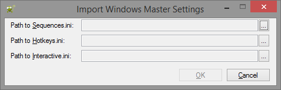

From the main menu, there is an option to export your settings...
Choosing this option will launch the dialog shown below...
Note: The folder that Windows Master resides in will automatically be selected for the export.
From the main menu, there is an option to import your settings...
Choosing this option will launch the dialog shown below...

Clicking on the ellipsis buttons will result in a Windows Explorer dialog which prompts for the path to the appropriate ini settings file. The first field needs the path to Sequences.ini. The second field needs the path to Hotkeys.ini. The third field needs the path to Interactive.ini. All of these files are exported when you export your settings. If you want to load your exported settings at a later time, you will need to choose the directory you exported your files into and select the appropriate files.